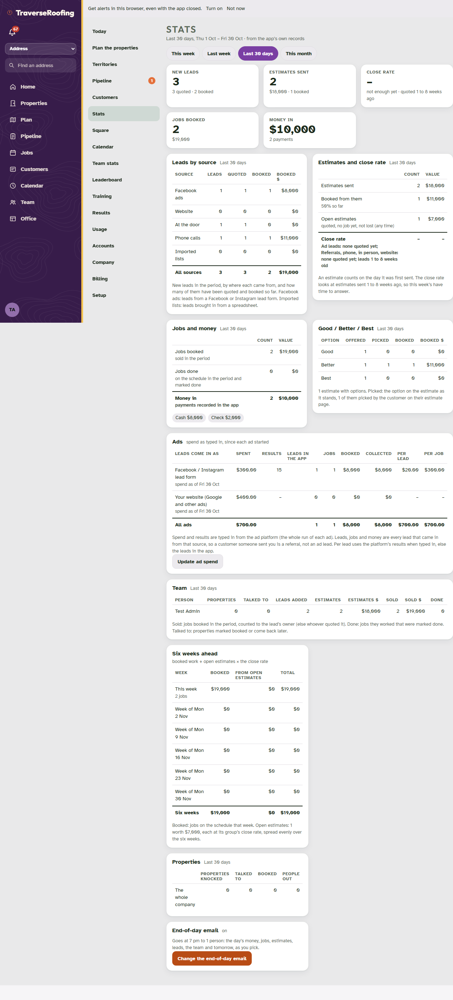
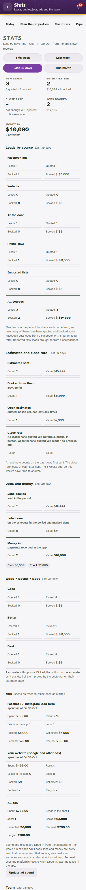
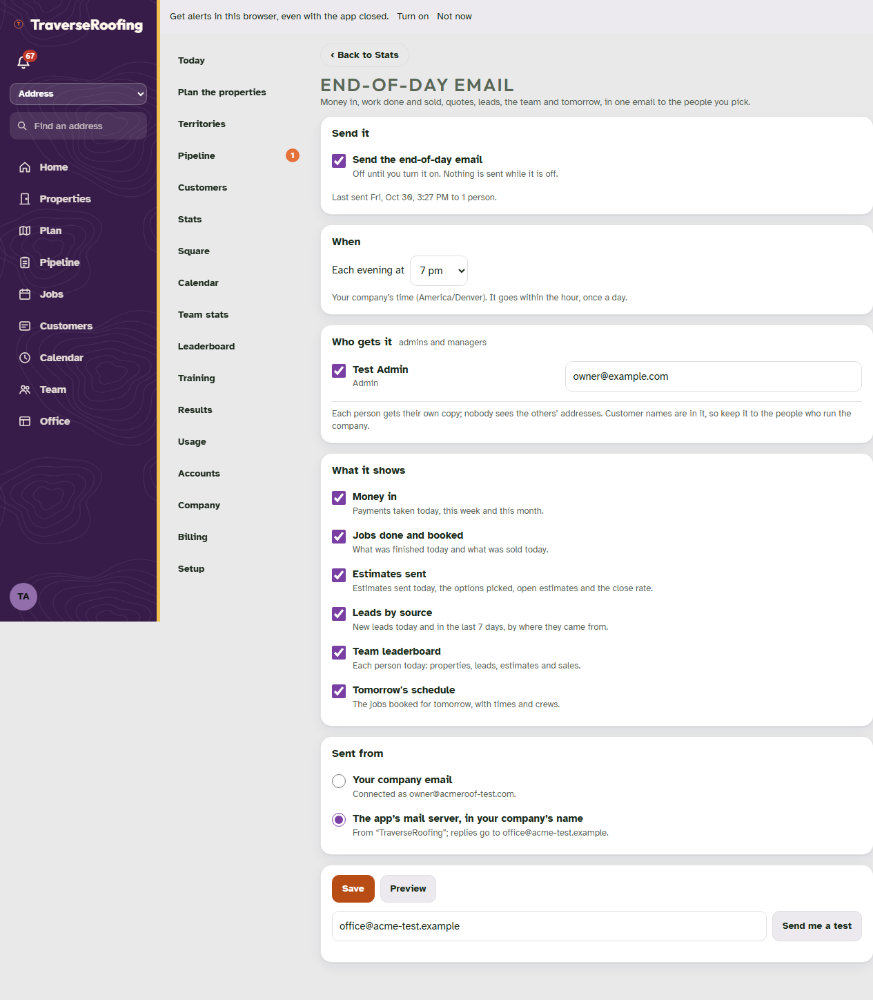
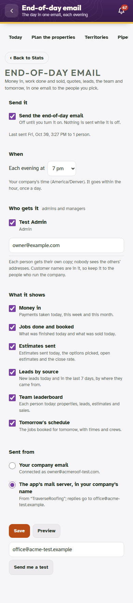
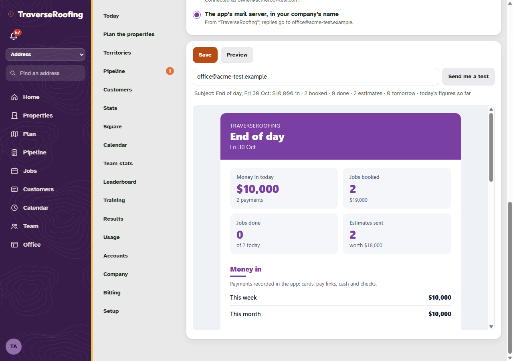
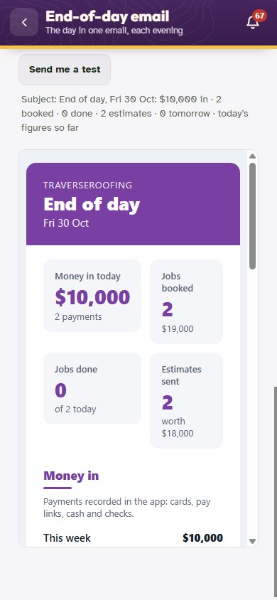
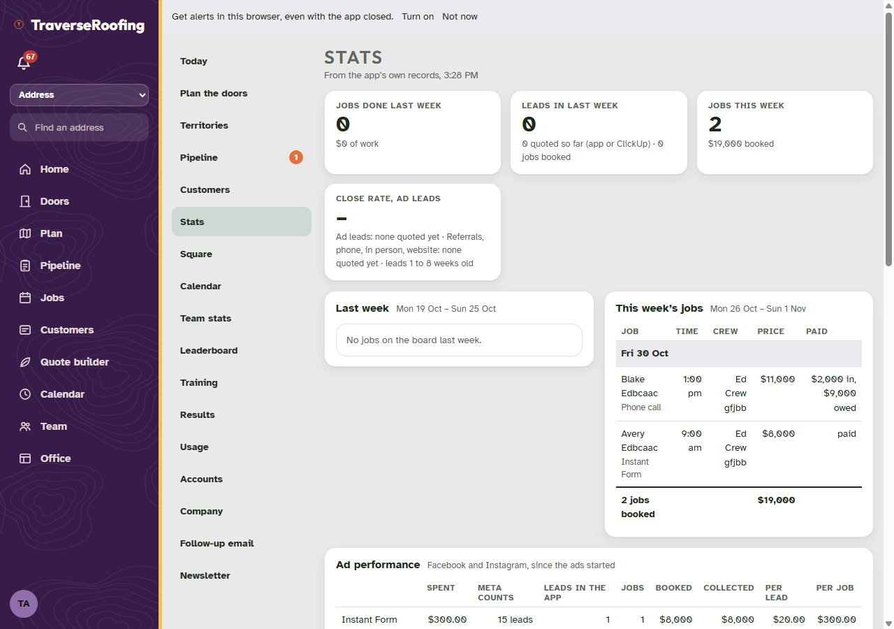

Editions: Stats page and end-of-day email
30 Oct 2026, the test harness (TraverseRoofing-like edition; harness data, throwaway accounts). Screens from edstats-test.mjs.
Stats page


End-of-day email settings




Sixfold, unchanged

Example email (made-up numbers)
traverse/business/eod-report-example.pdf: a sample roofing company, drawn by the app's own eod-lib.php.